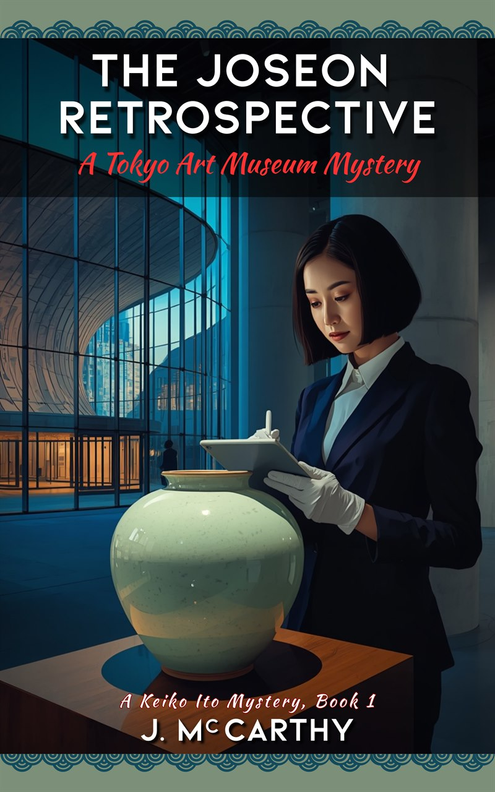

The Joseon Retrospective
A Tokyo Art Museum Mystery · A Keiko Ito Mystery, Book One
What is this book?
The Joseon Retrospective is a literary mystery set at the National Art Center Tokyo, in which Senior Registrar Keiko Ito investigates the murder of a Korean provenance researcher and solves it entirely through documentary evidence — badge logs, inspection schedules, and 1938 colonial-era acquisition records. It is Book One of the Keiko Ito Mystery Series, publishing October 2026.
About the book
The killer left no trace in the security footage. But every door in the building remembers who opened it.
Keiko Ito has spent nineteen years as a registrar — the last eleven at the National Art Center Tokyo, documenting everything that enters and leaves one of Japan’s most prestigious exhibition venues. She does not investigate crimes. She reconciles records.
Then the body of Dr. Yun Se-bin — the Korean provenance researcher accompanying a Joseon dynasty moon jar — is found in a basement service corridor. And Keiko discovers something the police cannot see: Se-bin left a message. Not a note. A seven-line annotation, handwritten in Korean, on page four of Keiko’s own condition report.
While the investigation circles the suspects — a defensive visiting scholar, a nervous estate lawyer, a Deputy Director of Operations caught withholding key information — Keiko follows the only trail she knows: the documentary one. The badge log that records every door. The inspection schedule she filed herself. The 1938 acquisition records buried in a second-floor archive — records Se-bin found, and chose, deliberately, to protect inside the one system nobody thought to watch.
What begins as a registrar’s itch — the specific unease of a professional who knows something is not where it should be — becomes the careful, methodical construction of a case that will take the investigation somewhere it cannot yet see.
Set mostly across ten days in October in the climate-controlled corridors of Tokyo’s art world, The Joseon Retrospective is a mystery about institutional trust, colonial history, and the quiet, durable power of a correctly maintained record.
For readers of The Cloisters and The Last Masterpiece who love a quiet, documentary mystery in the tradition of B.A. Shapiro.
Book One of the Keiko Ito Mystery Series.
Read the longer literary description
Keiko Ito has spent nineteen years as a senior registrar at the National Art Center Tokyo, documenting everything that enters and leaves one of Japan’s most prestigious exhibition venues. She does not investigate crimes. She reconciles records.
But when the body of Dr. Yun Se-bin — a Korean provenance researcher and the accompanying courier for a Joseon dynasty moon jar — is found in the basement service corridor, Keiko discovers something the police cannot see: Se-bin left a message. Not a note. A seven-line annotation, handwritten in Korean, on page four of Keiko’s own condition report.
While the investigation circles a cast of suspects — a defensive visiting scholar, a nervous estate lawyer, and a Deputy Director of Operations caught withholding key information — Keiko pursues the only trail she knows how to follow: the documentary one. The badge log that records every door. The inspection schedule she filed ten days before the murder. The 1938 acquisition records buried in a second-floor archive that Se-bin accessed on a prior visit and chose, deliberately, to preserve inside a system nobody could touch.
What begins as a registrar’s itch — the specific unease of a professional who knows something is not where it should be — becomes the careful, methodical construction of an evidentiary case that will take the investigation somewhere it cannot yet see. Set mostly across ten days in October in the clean, climate-controlled corridors of contemporary Tokyo, The Joseon Retrospective is a literary mystery about institutional trust, colonial history, and the quiet, durable power of a correctly maintained record.
Where to find it
- Paperback · $15.99
- Hardcover · $27.99
- Ebook · $4.99
Available from the retailers above. Trade orders through Ingram (iPage) and Baker & Taylor.
Links go live as each retailer opens for preorder. Join the file and I’ll tell you the moment they do.
Publication details
| Series | The Keiko Ito Mysteries, Book One of five |
|---|---|
| Publication | October 2026 |
| Publisher | J. McCarthy Books (independently published) |
| Paperback | $15.99 · ISBN 979-8-9964711-0-2 |
| Hardcover | $27.99 · ISBN 979-8-9964711-1-9 |
| Ebook | $4.99 |
| Length | approx. 300 pp. (provisional) |
| Categories | Cozy mystery · Literary fiction · Museum & art-world fiction · Korea/Japan historical themes · Dark academia |
| Trade orders | Ingram (iPage) & Baker & Taylor. Trade discount; returnable. |
A note on content
The novel contains a murder and its investigation, handled without graphic depiction. Its historical thread — the colonial-era dispossession of a Korean family’s heirloom — is treated seriously and without sensationalism.
Read further
Four documents from the world of the novel — a condition report, a catalog entry, a 1938 letter, and a floor plan — are prepared as facsimiles and free to readers. Reading groups have a separate set of materials.